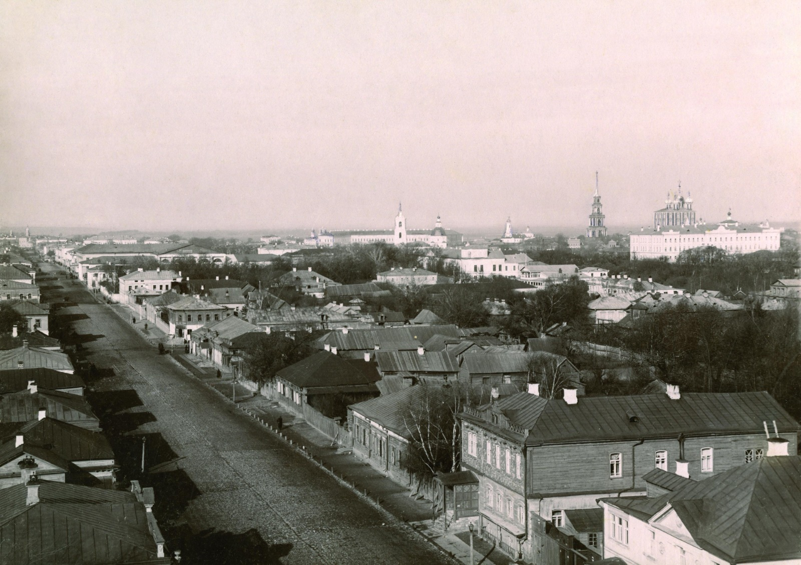
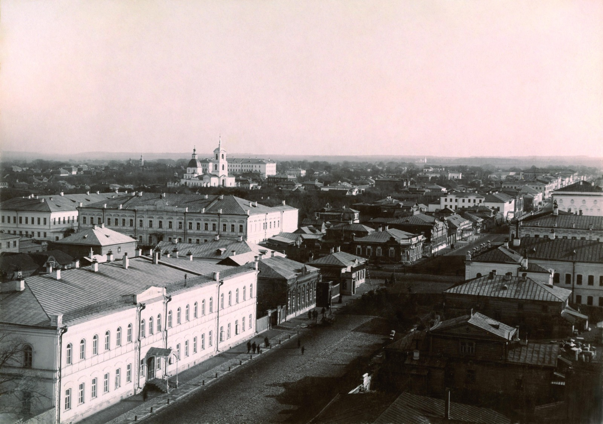
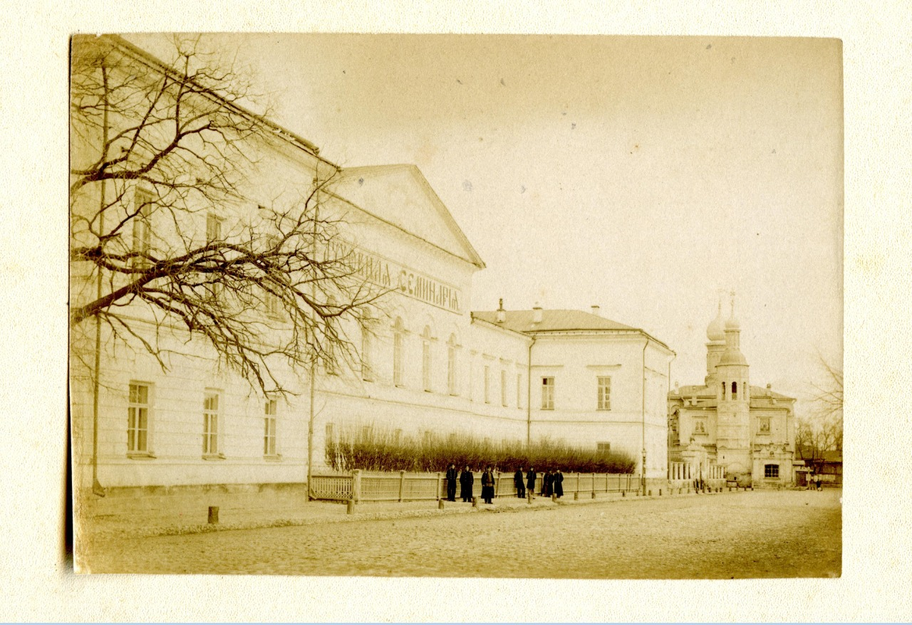
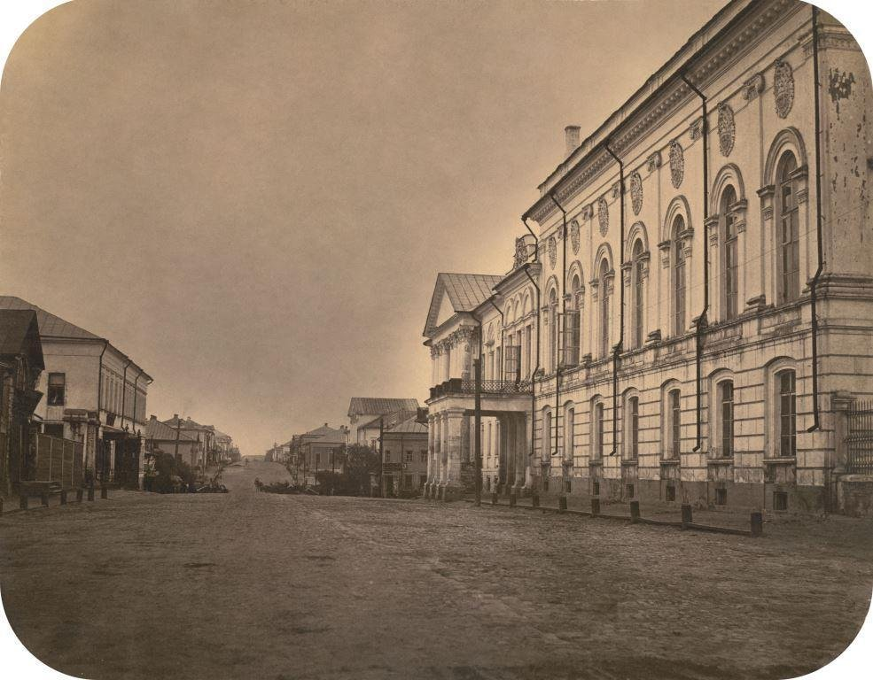

3. Ryazan in the XX century
3.1. Education of the Ryazan region
In 1929, the Ryazan province ceased to exist. Instead, the Ryazan District was formed, which was included in the Moscow Region. In 1937, the Ryazan Region was formed.
3.2. Population
In 1925, the population of Ryazan numbered 33.4 thousand people, together with the suburbs – about 50 thousand. In 1930, the number of inhabitants was already 72 thousand people. According to the population census of 1959, 210 thousand people lived in Ryazan, in 1970 – 348 thousand people, and in 1979 already 450 thousand. Such rapid growth was due to the rapid industrial development of the city and the rural population moving here, primarily young people. By the end of 1990, the number of residents of the city exceeded 530 thousand.
3.3. City economy
In 1930-1940, there were five large enterprises in the city: the Ryazselmash plant, the 168th plant (now the State Instrument Plant), the Ryazan Experimental Repair Plant, the tannery and the Pobeda Oktyabrya shoe factory.

In 1949-1950 heavy industry was actively developing in the city. A machine-tool plant and an oil refinery are being built. In 1959, an artificial fiber plant was opened. The Novo-Ryazan CHPP has been put into operation to supply all enterprises with electricity and heat. During the 1950s, the USSR's largest factory of heavy forging equipment (TKPO), calculating and analytical machines (SAM), thermal devices (Heatpribor), a foundry equipment plant, an electric vacuum plant and a radio plant, a tin slag processing plant were opened. In 1963, the Centrolit plant was founded. Light industry was also developing. Furniture, tea-making, confectionery and pasta factories are opening.
Together with the construction of heavy industry enterprises in Ryazan, new large residential areas are being formed – Prioksky work settlement, Sokolovka, Shlakov, Urban Grove and others.
By 1970. Ryazan has become a major scientific and industrial center. About 100 large industrial enterprises, design bureaus, and research institutes operated in the city. The importance of Ryazan in the military industry was high.

As before, Ryazan was a powerful railway junction, two stations, Ryazan-1 and Ryazan-2, provided cargo and passenger transportation in the southern and eastern directions.
In the 1960s and 1980s, urban infrastructure and the social and household sphere developed rapidly. New bridges and roads, schools and kindergartens, hospitals and polyclinics, stadiums and palaces of culture were built. The area of the city was rapidly increasing due to the inclusion of nearby villages in urban areas, the emergence of new large residential areas – Moskovsky, Dashkovo-Pesochnya, Kanishevo, Nedoevo.
3.4. Education
In the 1920s, a unified system of schools appeared, which provided primary and seven-year education. During this period, there were 12 schools of various types and nine technical schools, a higher agricultural school and a pedagogical institute in Ryazan. The main task of those years was the elimination of illiteracy. In 1923, 29 thousand people were literate in Ryazan and its suburbs.
By the end of 1950, more than 36 thousand people were studying in all educational institutions of Ryazan. Agricultural, medical named after Academician I.P. Pavlov and radio engineering institutes, a branch of the All-Union Correspondence Polytechnic Institute was opened.
In 1985, there were 70 secondary schools, 15 technical schools and secondary special schools, 40 vocational schools in Ryazan. Higher education could be obtained in four civilian institutes and two branches of Moscow universities, as well as in three higher military schools and the Higher School of the Ministry of Internal Affairs. In the 1960s and 1970s, the system of preschool children's institutions was finally formed.
3.5. Architecture
In 1929, the first multi-storey house was built in Ryazan. By 1948, there were about five thousand residential buildings in Ryazan. Of these, only two were five–storeyed, 19 were four-storeyed, the others were one- and two-storeyed. There were 436 stone houses, about 300 mixed (the first floor is stone, the second is wooden). All other residential buildings remained wooden.
In the first decades after the Great Patriotic War, during the period of rapid industrial development, in Ryazan, along with enterprises, the Palace of Pioneers, the theater named after S.A. Yesenin (now the Concert Hall of the Regional Philharmonic), the Ryazan House of Commerce, the buildings of the Sovnarkhoz and the city telephone exchange were built. In 1961, the Regional Drama Theater was built.


In the 1960s and 1970s, the buildings of the Central Post Office, the Gorky Regional Library, several cinemas, a circus, and a House of Life were opened.
In addition to cultural objects, a large number of housing is being built, in the historical part of Ryazan and in new areas, mass housing construction is unfolding with a predominance of multi-apartment, five- and nine-storey houses.
3.6. Culture
In 1923, the Ryazan Kremlin housed the State Regional Museum, which in 1968 was transformed into the Ryazan Historical and Architectural Museum-Reserve and occupied the entire territory of the Kremlin. In 1946, a memorial museum was opened in the house of Academician I.P. Pavlov, in 1980, the Regional Art Museum began working in the Ryumin Palace on Svobody Street. The Museum of the History of the Youth Movement and the Museum of the History of the Airborne Forces have also begun work.
There are dozens of libraries in the city, three theaters – the regional drama theater, the young spectator and the puppet theater, many cinemas, palaces of culture, stadiums and swimming pools.
In the 2nd half of the twentieth century, the city was decorated with monuments: to academician I.P. Pavlov, F.A. Poletaev, S.A. Yesenin, G.K. Petrov, the memorial complex of Victory, Soviet-Polish friendship during the Great Patriotic War and others.